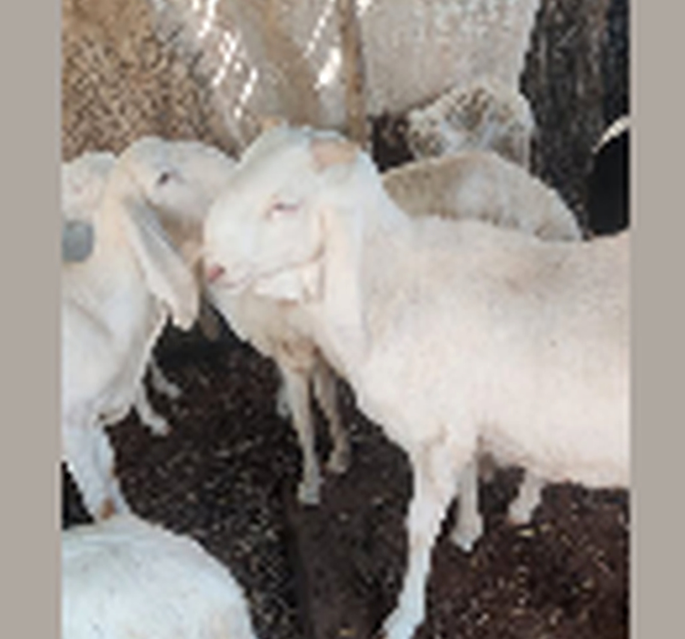
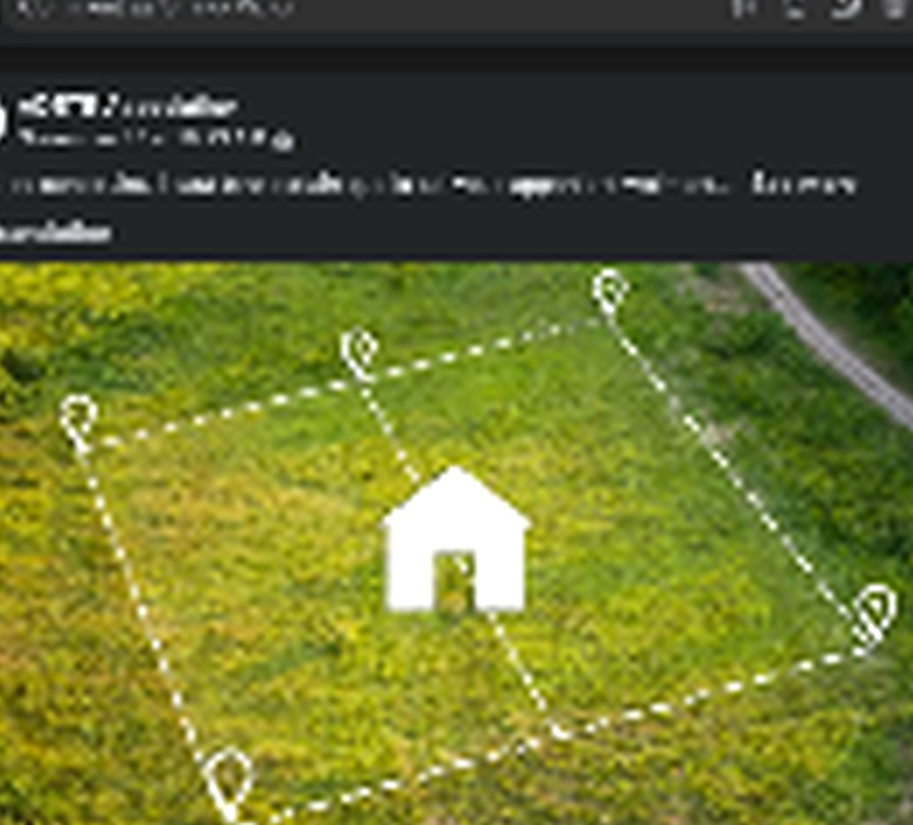

01
Éducation
Créer de meilleures conditions d'apprentissage et soutenir le potentiel des enfants et des jeunes.

Association A.D.E.T.E. · Togo
Éducation, solidarité, santé et environnement : A.D.E.T.E. agit au plus près des réalités locales pour accompagner les enfants, les familles et les communautés.

A.D.E.T.E. signifie Actions du Développement et d'Épanouissement pour un Togo Émergent. L'association s'inscrit dans une logique de proximité, d'écoute et d'accompagnement des personnes vulnérables.
Sa mission met l'accent sur les enfants, les jeunes filles et garçons démunis, les femmes et les personnes âgées, sans distinction de race, de religion ou de sexe.

Les réponses durables commencent par une bonne compréhension des besoins, des ressources locales et des priorités des familles.
Nos domaines d'intervention
Une approche simple et cohérente : soutenir les personnes, renforcer les communautés et améliorer durablement leur cadre de vie.
Créer de meilleures conditions d'apprentissage et soutenir le potentiel des enfants et des jeunes.
Accompagner les personnes et familles en situation de vulnérabilité par des actions concrètes de proximité.

Favoriser la prévention, l'information et l'accès à des actions de santé communautaire utiles et accessibles.

Encourager des pratiques responsables qui protègent les ressources locales et renforcent la résilience.

Sur le terrain

Les activités d'élevage et de production locale peuvent soutenir les revenus des familles, l'autonomie et la sécurité alimentaire.

Le territoire, les terres et leur usage responsable sont au cœur d'un développement durable capable de bénéficier aux générations futures.
Les visuels de cette section illustrent les thématiques observées dans les publications publiques de l'association.
Nos valeurs
Les valeurs présentées par l'association guident la manière d'accompagner les communautés et de construire des relations durables.
S'engager avec A.D.E.T.E.
Partenaire, bénévole, sympathisant ou organisation : échangeons sur les façons de soutenir des actions utiles et durables.
Contact